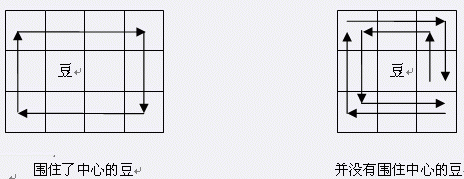

是不是平时在手机玩吃豆豆游戏玩腻了呢？最近 MOKIA 手机上推出了一种新的围豆豆游戏，大家一起来试一试吧。
游戏的规则非常简单，在一个 $N\times M$ 的矩阵方格内分布着 $D$ 颗豆子，每颗豆有不同的分值 $V_i$。游戏者可以选择任意一个方格作为起始格，每次移动可以随意的走到相邻的四个格子，直到最终又回到起始格。最终游戏者的得分为所有被路径围住的豆豆的分值总和减去游戏者移动的步数。矩阵中某些格子内设有障碍物，任何时刻游戏者不能进入包含障碍物或豆子的格子。游戏者可能的最低得分为 $0$，即什么都不做。
注意路径包围的概念，即某一颗豆在路径所形成的的多边形（可能是含自交的复杂多边形）的内部。下面有两个例子：

第一个例子中，豆在路径围城的矩形内部，所以豆被围住了。第二个例子中，虽然路径经过了豆的周围的 $8$ 个格子，但是路径形成的多边形内部并不包含豆，所以没有围住豆子。布布最近迷上了这款游戏，但是怎么玩都拿不了高分。聪明的你决定写一个程序来帮助他顺利通关。
第一行两个整数 $N$ 和 $M$，为矩阵的边长。
第二行一个整数 $D$ ，为豆子的总个数。
第三行包含 $D$ 个整数 $V_1$ 到 $V_D$，分别为每颗豆子的分值。
接着 $N$ 行有一个 $N×M$ 的字符矩阵来描述游戏矩阵状态， 0 表示空格，# 表示障碍物。而数字 $1$ 到 $9$ 分别表示对应编号的豆子。
0
#
仅包含一个整数，为最高可能获得的分值。
3 8 3 30 -100 30 00000000 010203#0 00000000
38
$50\%$ 的数据满足 $1≤D≤3$。
$100\%$ 的数据满足 $1≤D≤9，1≤N, M≤10，-10000≤V_i≤10000$。
 Comet OJ
Comet OJ